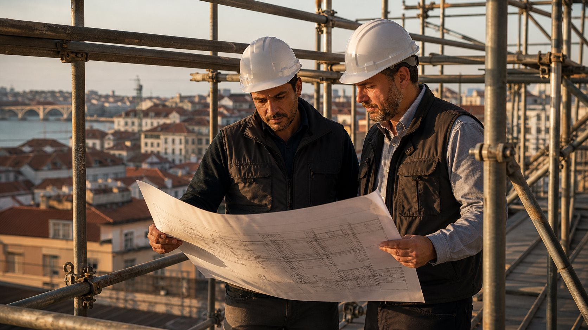

Execução Técnica
Intervenção em obra, indústria e metalomecânica com equipa própria. Análise do âmbito, planeamento técnico e execução supervisionada — não cedência de pessoas.
Empresa
Empresa portuguesa de execução de projectos industriais — soldadura, serralharia, caldeiraria, tubagem, pintura e manutenção. Sede em Miranda do Douro, na fronteira com Espanha.
Quem somos
A M&A Elo Profissional é uma empresa portuguesa de prestação de serviços técnicos industriais, sediada em Miranda do Douro. Executamos projectos de soldadura, serralharia, caldeiraria, tubagem, pintura industrial e manutenção — com equipa constituída por projecto, gestão operacional própria e responsabilidade técnica e contratual pelo resultado.
Não somos uma empresa de trabalho temporário. Não cedemos trabalhadores. Assumimos a execução, gerimos a equipa e respondemos pelo resultado — independentemente do local onde o trabalho é realizado.
Cada projecto é executado com equipa dimensionada para o âmbito, prazo e exigências técnicas do cliente. A M&A Elo assume a coordenação operacional completa — selecção, mobilização, supervisão e entrega.
Quem lidera
Com cinco anos de experiência no sector técnico industrial, Alexandre Luchini Neto fundou a M&A Elo com um modelo claro: execução técnica com responsabilidade total, sem intermediários. O percurso inclui operação directa em obra, gestão de equipas técnicas e desenvolvimento de relações com clientes industriais em Portugal e na Península Ibérica.
A M&A Elo foi constituída em Agosto de 2025. A curta existência formal é acompanhada por experiência operacional acumulada e por um conjunto de projectos executados que demonstram capacidade técnica real.
Projectos executados
Curta existência formal, experiência operacional acumulada. Cada caso descreve âmbito técnico, equipa mobilizada e duração.
Fabrico de rede de tubagens nas instalações do cliente, em processos TIG e Eletrodo. Equipa de 4 soldadores e 2 serralheiros, 4 semanas com supervisão técnica M&A Elo em todas as fases. Entrega documentada conforme especificações técnicas do cliente.
Indústria de fabrico de matéria-prima para poliuretano.
Fabrico em série em aço estrutural, processo MAG, nas instalações do cliente. Equipa de 6 soldadores e 3 ajudantes, 9 semanas com supervisão técnica M&A Elo. Entrega conforme especificações dimensionais e técnicas.
Sector de equipamentos de construção e movimentação de terras.
Desmontagem, manutenção completa e remontagem do circuito de arrefecimento de radiadores em paragem programada. Equipa de 2 mecânicos e 4 ajudantes, 2 semanas com supervisão M&A Elo. Entrega documentada com registo de cada fase.
Operador de barragem hidroeléctrica.
Desmontagem parcial e limpeza da fossa da turbina, montagem de pás das guias do anel distribuidor, substituição de peças e remontagem de chumaceira em paragem programada. Equipa de 2 mecânicos e 3 ajudantes, 12 semanas com supervisão M&A Elo.
Operador de barragem hidroeléctrica.
Desmontagem e limpeza de filtros de 1.º e 2.º escalão em paragem programada, com inspecção técnica e verificação de componentes. Equipa de 1 mecânico e 3 ajudantes, 4 semanas com supervisão M&A Elo.
Operador de barragem hidroeléctrica.
Pintura industrial em 3.000 m² de estruturas metálicas e paredes. Preparação de superfície, primário anticorrosivo e acabamento industrial. 4 pintores e 3 ajudantes, 8 semanas com supervisão M&A Elo. Verificação final de conformidade.
Sector da construção civil.
Onde actuamos
Miranda do Douro · Lisboa · Aveiro · Viana do Castelo · Vila Real — e outras regiões conforme projectos em curso. Projectos internacionais em Espanha, França, Bélgica e Alemanha.
Cobertura geográfica · 2026
Mapa interactivo da Península Ibérica com marcadores nas cinco cidades de actuação: Miranda do Douro (sede), Lisboa, Aveiro/Estarreja, Viana do Castelo e Vila Real.
Equipa própria em obra
Soldadores, serralheiros e técnicos qualificados — analisados individualmente, supervisionados pela M&A Elo em cada intervenção.
Âmbito definido antes da proposta
Cada projeto começa por leitura técnica — tipo de intervenção, materiais, prazo, contexto. Sem orçamentos cegos.
Lisboa · Aveiro · Viana do Castelo
Obras confirmadas em curso. Capacidade de resposta a novas regiões conforme âmbito do projeto.
Sede em Miranda do Douro
Estrutura formal registada em Portugal, contacto identificado, responsabilidade legal e fiscal.
Forma de atuação
Intervenção em obra, indústria e metalomecânica com equipa própria. Análise do âmbito, planeamento técnico e execução supervisionada — não cedência de pessoas.
Soldadores, serralheiros e técnicos com experiência verificada. Cada perfil é analisado individualmente antes de integrar uma intervenção.
Do primeiro contacto à entrega documentada. Um responsável técnico identificado em cada projeto, comunicação clara em cada fase.
Sede em Miranda do Douro. Projetos em Lisboa, Aveiro, Viana do Castelo e outros pontos do país conforme âmbito.
Análise prévia · proposta técnica e orçamento · execução planeada · entrega documentada. Sem improvisação em nenhuma fase.
Estrutura formal, contacto identificado, responsabilidade legal e fiscal. Parceiro institucional real para empresas industriais.

Missão
A M&A Elo foi criada com um propósito definido: executar serviços técnicos industriais para empresas em Portugal — com equipa própria, análise prévia de cada projeto e supervisão técnica em obra.
Cada proposta é construída sobre âmbito real, materiais identificados, prazo possível e equipa dimensionada. O que prometemos, executamos. O que não conseguimos executar, dizemos antes da proposta.
Iniciar contacto
Para empresas com projeto técnico industrial ou profissionais qualificados a integrar equipas, o canal direto é o WhatsApp da M&A Elo.